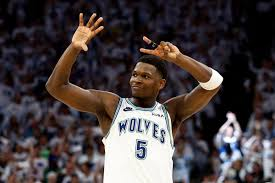
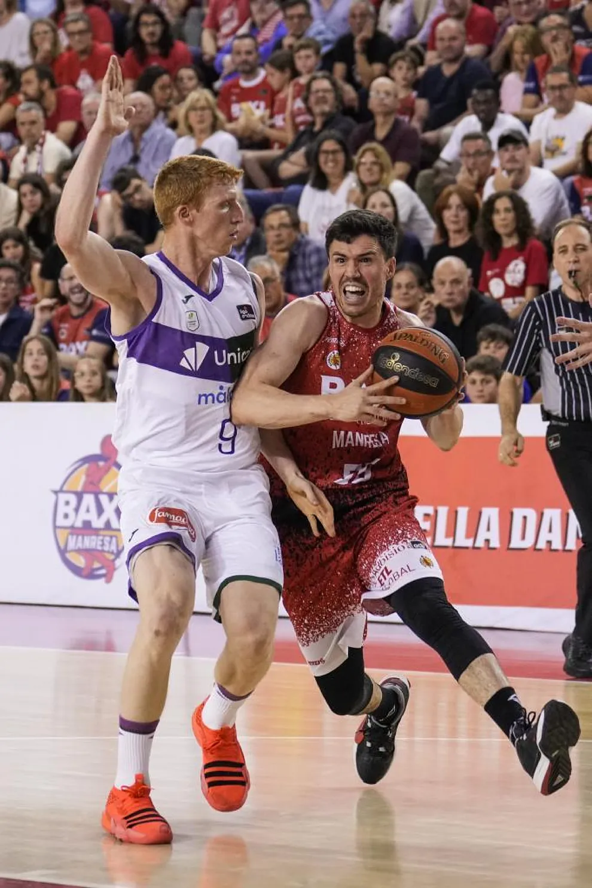
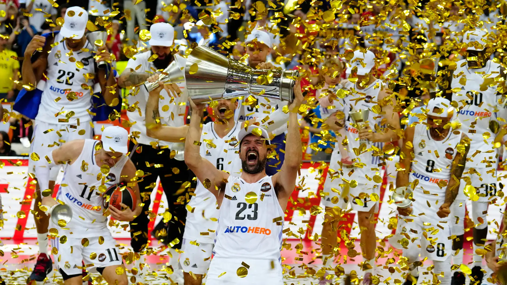
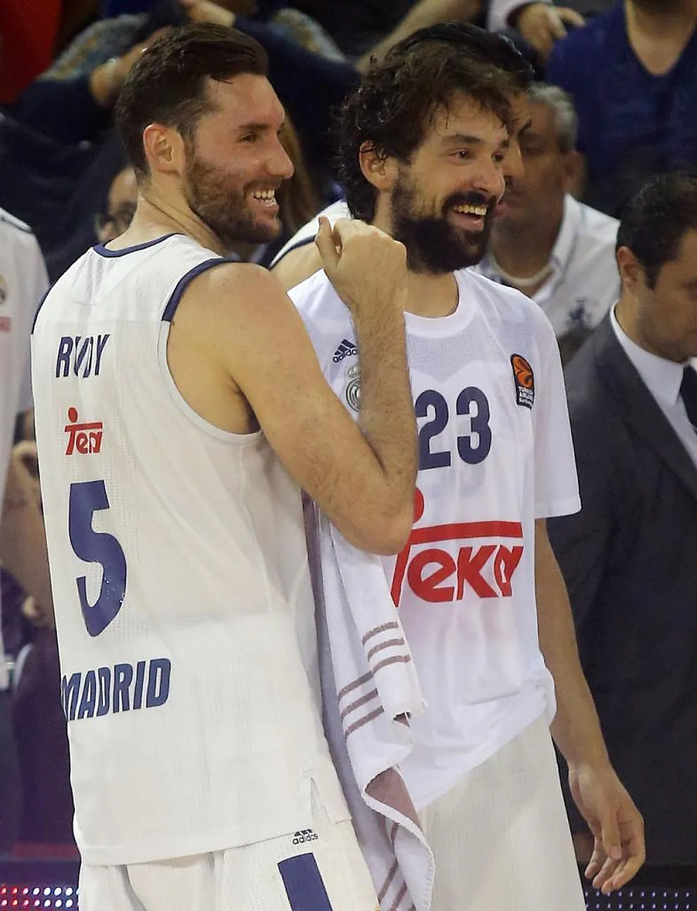

LOS TIMBERWOLVES REMONTAN UNA ELIMINATORIA HISTORICA ANTE DENVER

Las finales de Conferencia que coronarán a una estrella: Doncic contra Edwards y Boston ante la revolución
Por sexto curso seguido habrá un campeón diferente en la NBA, tras los títulos conseguidos por Denver Nuggets, Golden State Warriors, Milwaukee Bucks, Los Angeles Lakers y Toronto Raptors. No ocurría algo similar desde el periodo comprendido entre la temporada 1974-75 y la 1979-80. Cada uno de estos equipos ha sido fiel a su estilo, pero en la temporada 2023-24, varios llegan sufriendo mientras otros dominan con autoridad. Pero lo importante es que llegan, y ahí es donde realmente empieza la fiesta del baloncesto.
Denver, con su imponente juego de equipo y la brillantez de Nikola Jokić, logró romper la maldición del campeonato para la franquicia. Golden State, conocido por su letal ataque de tres puntos liderado por Stephen Curry, demostró que la experiencia y la precisión pueden superar cualquier obstáculo. Milwaukee, con Giannis Antetokounmpo a la cabeza, conquistó el título con una combinación de fuerza física y habilidades extraordinarias. Los Lakers, con la legendaria dupla de LeBron James y Anthony Davis, añadieron otro anillo a su ya impresionante colección. Toronto, sorprendentemente, se llevó el título con un enfoque defensivo sólido y el liderazgo de Kawhi Leonard.
Esta diversidad en los campeones refleja la riqueza de estilos y estrategias en la NBA moderna. En la presente temporada, algunos equipos han tenido que superar adversidades, lidiar con lesiones y remontar series complicadas, mientras que otros han navegado con relativa facilidad hacia las rondas finales, mostrando un dominio indiscutible. Sin embargo, independientemente del camino recorrido, todos ellos comparten la capacidad de llegar a las instancias decisivas, donde cada partido es una batalla y cada jugada puede marcar la diferencia entre la gloria y la derrota.
La emoción está garantizada, y los aficionados esperan con ansias ver quién se coronará esta vez como el nuevo campeón de la NBA, continuando con esta fascinante racha de diversidad en la cima del baloncesto profesional.
ACB Liga Endesa
Unicaja arrolla al Manresa y ya está en las semifinales de la Liga Endesa
El Unicaja se metió en semifinales por la vía rápida, (63-86).
Exhibición de poderío y músculo del equipo malagueño en el Nou Congost. Tras una primera parte muy reñida, el Unicaja sacó el rodillo para pasar por encima de un BAXI Manresa cuyo poco acierto en el triple le fue dejando atrás en el partido. Otro partido coral de los de Ibon Navarro, muy seguros en defensa durante los 40 minutos. Los de Los Guindos no necesitaron de la mejor versión de Osetkowski.
El choque arrancó con el BAXI Manresa queriendo ser importante. Dos jugadas calcadas de Geben daban ventaja a los locales. Rápidamente respondieron los malagueños se rehacían por medio de Ejim y Barreiro para tomar la iniciativa (4-5), gran triple del gallego. El partido sufría el clásico intercambio de golpes de cualquier inicio. Ninguno de los dos conjuntos rompían la balanza. (11-11). Un parcial 5-0 impulsaba a los locales, aunque la entrada de Carter y Taylor reactivaba al Unicaja, aunque dos triples de Williams disparaban la ventaja local al término del primer cuarto (28-20). BAXI Manresa comenzaba avisando como en Málaga

El segundo acto fue para las defensas. Una de las especialidades del cuadro de la Costa del Sol. La entrada a pista de Will Thomas acercaba a los de Ibon Navarro, que tenían en la dupla Kravish-Taylor a los faros anotadores para reducir distancias (32-31). Los malagueños no bajaron el nivel y lograron ponerse por delante desde la larga distancia con varios triples consecutivos de Tyler Kalinoski, que fue un dolor de cabeza para la defensa catalana. Con todo esto, el Unicaja volteaba el resultado al descanso (36-40).
El tercer cuarto fue decisivo para la eliminatoria. El Unicaja sacó el rodillo y pasó por encima del BAXI Manresa. Un parcial 2-11 rematado por Kravish daba una nueva máxima a los visitantes, que ahogaban en defensa al BAXI Manresa. Los de Pedro Martínez se obcecaron con los triples y eso les llevó a una caída en barrena. La irrupción en pista de Alberto Díaz disparó a los suyos en el luminoso en un Nou Congost que cada vez veía más difícil poder forzar el tercer y definitivo partido de la serie. Finalmente, los malagueños acabaron el cuarto 47-65 para dejar el choque prácticamente visto para sentencia.
El último cuarto fue un pequeño paseo para los de Ibon Navarro. Buen trabajo defensivo y sin pisar el acelerador ante un BAXI Manresa peleón y lleno de orgullo que levantó a su gente de los asientos con su casta. Pese a los intentos de rebajar la diferencia por parte del BAXI Manresa, cogía el testigo en ataque Djedovic para impulsar aún más al equipo hasta los veinticinco de diferencia. El partido se cerró por 63 a 86. Se gustó Tyson Carter, con nueve asistencias, y Sima con sus siete rebotes. Semana de tranquilidad para un Unicaja que ya mira a Valencia o Murcia
Les dejamos un resumen del partido:
Euroliga
El último baile europeo de la vieja guardia del Real Madrid

"Ya el año pasado teníamos un poco esa sensación y ahora se repite. Esperamos todos terminar ganando"
Asegura Causeur, orgulloso de que le coloquen junto a un trío tan ilustre: "Yo siempre me pongo un escalón por debajo de estas leyendas. Me quito el sombrero con ellos tres. Estoy contento de que me pongan en este grupo, aunque yo sé que están a un nivel superior".
Los cuatro han sido fundamentales en una de las más brillantes épocas del baloncesto del Real Madrid, incluso en la consecución del título del año pasado. Acumulan 46 temporadas en el club, con Llull como hombre récord con 18. Suman 81 títulos como madridistas, 34 presencias en la Final Four y 11 Euroligas. Cifras legendarias que aspiran a ampliar en una cita que, pese a todo lo vivido en sus carreras, afrontan con la emoción de un novato.
"Para mí es como si fuera la primera Final Four. Tengo muchísimas ganas de jugar y de ayudar al equipo", dice Rudy. "Esta Final Four es igual de especial que todas las anteriores", considera Llull, que disputará la décima. "Hay mucha ilusión. Aquí cuando vienes a entrenar, el pensamiento de todos los días es llegar a la Final Four y ganarla", afirma Sergio Rodríguez.

La calidad, la unión y haber entendido la exigencia del Real Madrid es lo que les ha convertido en iconos del baloncesto blanco. El capitán Llull cree que "no hay un secreto, es algo obvio. Cuando te pones esta camiseta sabes la responsabilidad que conlleva. No vale llegar, hay que ganar". Para Rudy, "esto es una familia en la que el escudo está por encima de todo".